April 2024
SuperFlow dyno room
Dyno testing, measurement, and setup work for real-world performance gains.
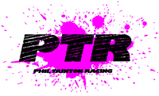
(03) 9764 2621Race workshop / Knoxfield, Victoria
Motorcycle tuning, engine development, dyno work, and race preparation for riders who want lap-speed, throttle response, and reliability under pressure.
Facebook details
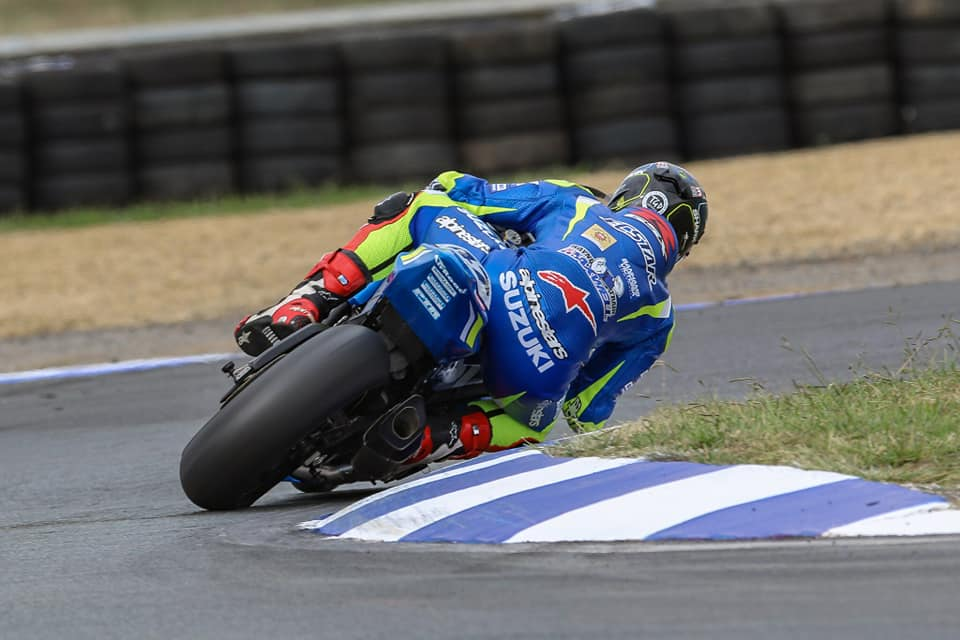
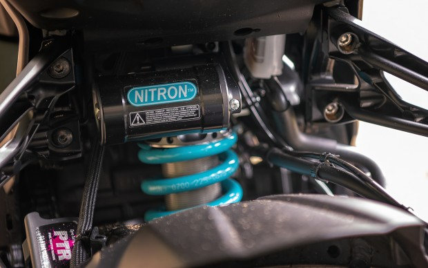
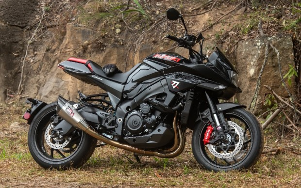
Facebook post / April 20, 2024
The Facebook feed shows PTR's dyno room work in action: race bike strapped down, data on screen, and tuning decisions made from real numbers rather than guesswork.
Facebook photo highlights
PTR's Facebook photos show the parts of the job riders care about: dyno testing, machining, race bike setup, and detailed component development.
Dyno testing, measurement, and setup work for real-world performance gains.
Machining and component preparation for serious engine and chassis builds.
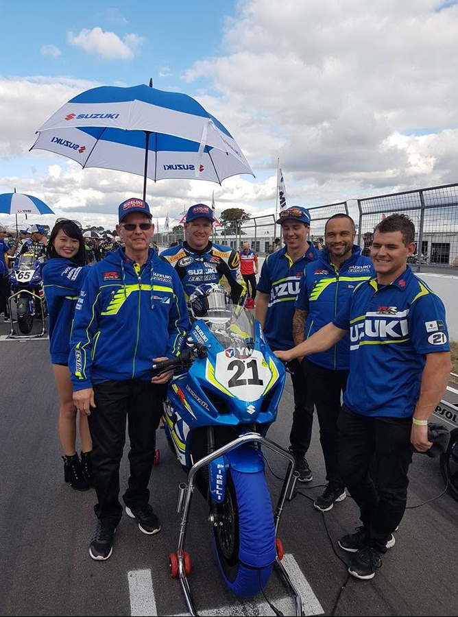
Workshop preparation for race bikes before they head back to the track.
Suspension, controls, and performance setup checked in the PTR workshop.
Pit-lane capability
PTR supports road, race, drag, speedway, motocross, and offroad motorcycles with mechanical development that is practical, measured, and proven on track.
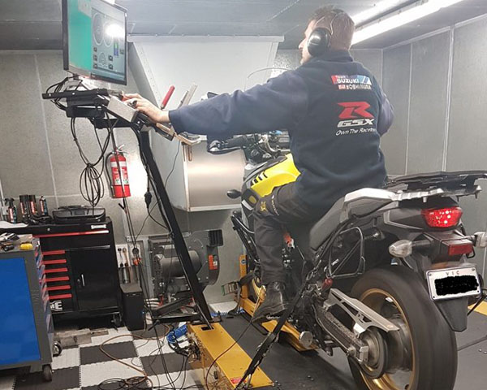
01Dynojet 250ix Eddy Current dyno tuning with high speed ram air simulation, closed-loop tuning, Woolich Racing Software, Power Commander, ECU tuning, and other tuning devices.
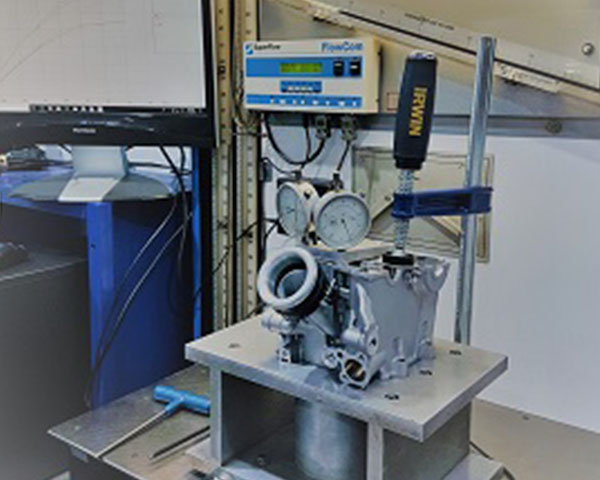
02Serdi valve seat cutting, Rottler machinery, and SuperFlow 600 flow bench work to measure, graph, port, and develop cylinder heads for drag, circuit, and motocross power.
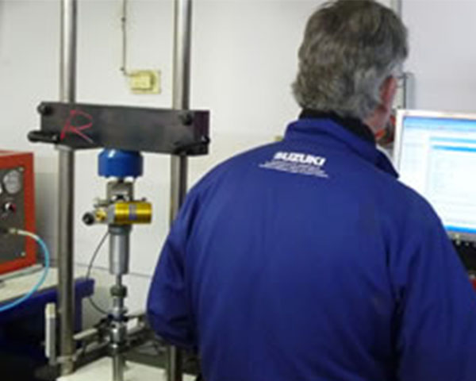
03Computerised Roehrig suspension dyno work to measure front forks and rear shocks before modifying and revalving to suit exact rider and bike requirements.
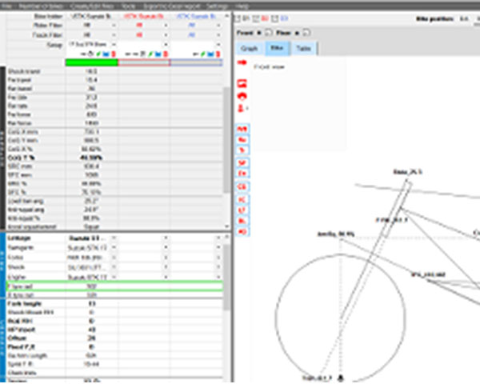
04Race-focused chassis setup for motorcycles that need to put power down cleanly and behave predictably under load.
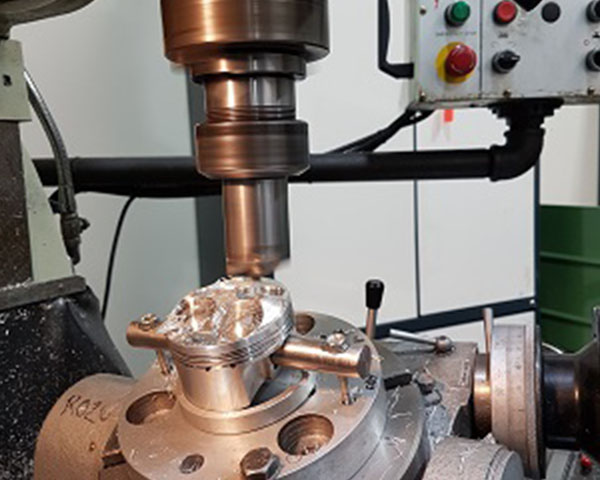
05In-house performance machining and preparation for serious road, race, offroad, drag, and speedway motorcycle builds.
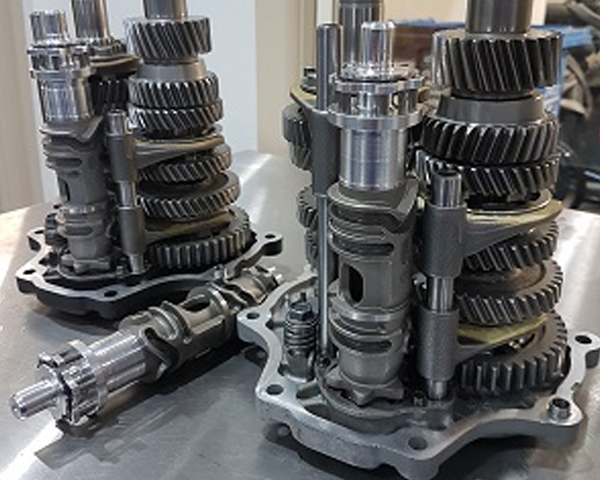
06Gearbox inspection, modification, and preparation for race bikes and high-output performance motorcycle projects.
Race-developed knowledge
Since 1990, PTR has prepared and tuned performance motorcycles for road racing, motocross, drag racing, and speedway. The team has worked with riders including Steve Martin and Grant Hodson, plus factory Suzuki GSX-R750 superbikes and championship-level Australian race programs.
The redesign keeps that credibility front and centre: less clutter, clearer service paths, stronger imagery, and faster ways for riders to get in touch.
Selected builds
From the feed
Public project imagery from the PTR Katana build gives the site more of the workshop, road, and detail shots riders expect to see before they call.
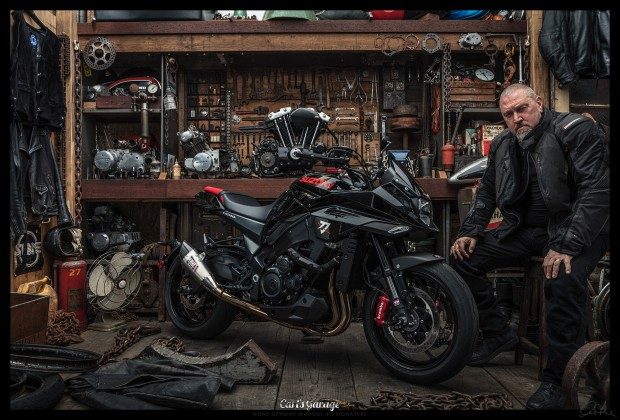
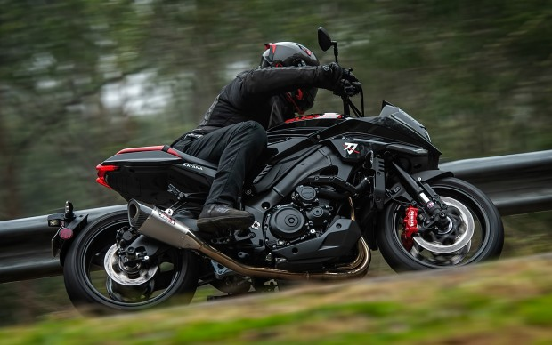
Trusted by serious riders
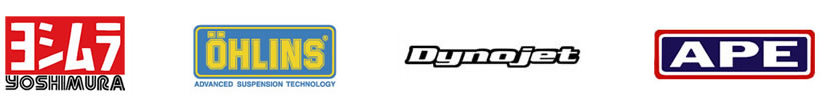
Ready for the next session?
Factory 1/45 Gilbert Park Drive, Knoxfield VIC 3180